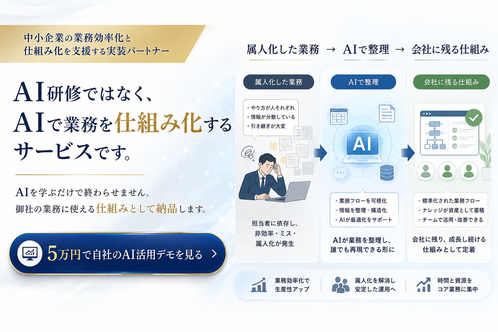
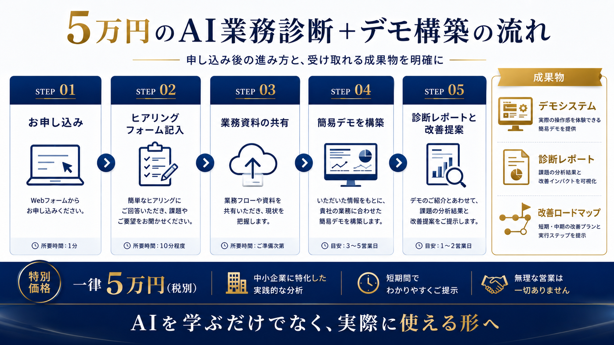

01 / INSIGHT
AI化できる業務
どの業務にAIを使うと効果が出やすいかを整理します。

中小企業向けAI業務改善パック
AIを学ぶだけで終わらせません。
御社の業務に使える仕組みとして納品します。
What's Different
AI研修を受けても、現場の業務が変わらないことがあります。
理由はシンプルです。学ぶことと、業務で使える仕組みを作ることは別だからです。
社員がAIを学んでも、どの業務に使うのか、どう運用するのか、誰が管理するのかが決まっていなければ、結局使われません。
このサービスは、AIを学ぶ講座ではありません。
御社の業務に合わせて、実際に使える仕組みを作る実装サービスです。

Problem
中小企業では、長年の担当者だけが知っている仕事がたくさんあります。
なんとなく危ないとは分かっている。
でも、忙しくて後回しになっている。
そこにAIを入れます。
業務効率化だけでなく、会社に残る資産を作っていきます。
Step-by-Step
いきなり高額なシステム構築を提案するサービスではありません。
まずは御社の業務をヒアリングし、AIで効率化・仕組み化できる部分を整理します。
そのうえで、簡易デモシステムを作成し、実際にどう使えるのかを確認していただきます。
診断後、必要な場合のみ本格構築をご提案します。

Demo Examples
デモは、難しいAIツールの説明ではありません。
御社の業務に合わせて、まずは小さく試せる形にします。

What You Get
01 / INSIGHT
どの業務にAIを使うと効果が出やすいかを整理します。
02 / INSIGHT
担当者に依存している仕事を見える化します。
03 / INSIGHT
最初に仕組み化すべき業務を提案します。
04 / DELIVERABLE
御社の業務に合わせた簡易デモを確認できます。
05 / DELIVERABLE
本格導入する場合の進め方が見えます。
FAQ
Get Started
まずは5万円の「AI業務診断＋デモ構築」から始められます。
御社の業務でAIがどう使えるのか、実際のデモで確認してください。
診断費用：50,000円（税別）・無理な営業なし